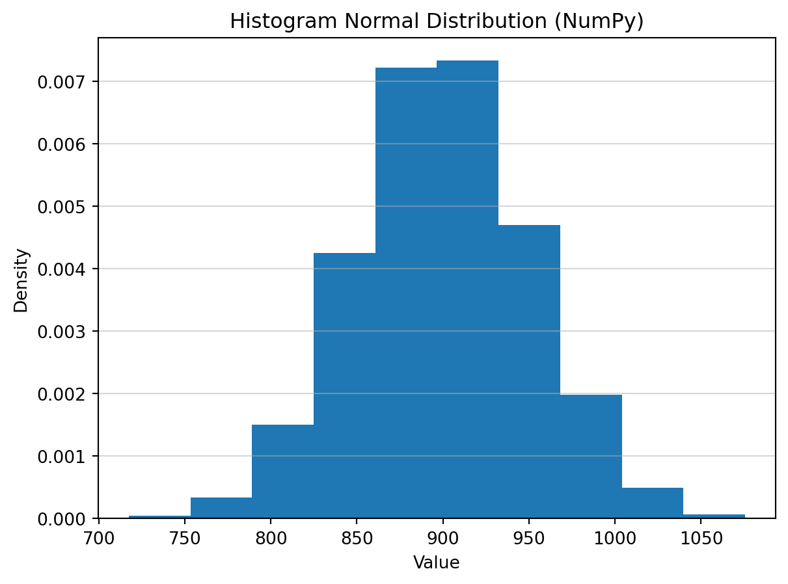

import matplotlib.pyplot as plt
import numpy as np
# Instantiate a default random number generator
rng = np.random.default_rng()[# Random Variable Kontinu
Kita Beri Garansi Berapa Lama?

Live Coding: “Normal is Everywhere”
Misalnya suatu pabrik bisa menghasilkan 10000 lampu pertahun yang bisa bekerja rata-rata 900 jam, meskipun dalam kenyataanya individual lampu bisa mati bervariasi setelah suatu angka jam positif yang random. Seberapa besar varians ini diukur oleh besaran deviasi, misalnya 50 jam yang berarti variance 2500 jam^2
Suatu variable random bisa memiliki probability density function (pdf) berbentuk lonceng, dengan dua parameter \(\mu\) dan \(\sigma\).
Untuk distribusi normal standar, lokasi titik tengah = 0 dan deviasi standar = 1.
# Generate a single random number from the standard normal distribution (mean=0, std=1)
sample_scalar = rng.normal()
print(f"1. Single sample: {sample_scalar}")1. Single sample: -0.5873393207418891Dalam kasus kita lokasi titik tengah = 900 dan deviasi standar = 50. Kita ukur waktu hidup 5 buah lampu, maka berapa jam hidup sampai lampu ini mati?
mu = 900
sigma = 50
# Generate a 1D array of 5 numbers with mean=900, standard deviation=50
samples_1d = rng.normal(loc=mu, scale=sigma, size=5)
print(f"2. 1D array: {samples_1d}")2. 1D array: [907.34094939 852.11807415 902.96759901 868.82813861 914.4012904 ]Berbeda beda yaitu: np.float64(907.3409493906158)
- Generate data acak
numpy.random.normal. - Tunjukkan aturan empiris: 68% data ada di \(\mu \pm \sigma\), 95% di \(\mu \pm 2\sigma\).
- Visualisasi: Plot kurva lonceng dengan seaborn dan arsir area probabilitas. kita coba untuk 10000
N= 10000
data = rng.normal(loc=mu, scale=sigma, size=N)
np.histogram(data, bins=10)(array([ 17, 120, 537, 1522, 2584, 2625, 1683, 710, 177, 25]),
array([ 717.47692297, 753.27992597, 789.08292898, 824.88593198,
860.68893499, 896.49193799, 932.294941 , 968.097944 ,
1003.90094701, 1039.70395001, 1075.50695302]))Kita hitung berapa data antara 1. \(850< X < 950\) 2. \(800< X < 1000\) 3. \(750 < X <1050\)
counter1=0
counter2=0
counter3=0
for n in data:
if n >= 850 and n < 950:
counter1 += 1
elif n >= 800 and n < 1000:
counter2 += 1
elif n >= 750 and n < 1050:
counter3 += 1
print(counter1/N, (counter1+counter2)/N, (counter1+counter2+counter3)/N)0.6754 0.9517 0.9975# 3. Menambahkan label dan judul
plt.hist(data,bins=10, density=True)
plt.title('Histogram Normal Distribution (NumPy)')
plt.xlabel('Value')
plt.ylabel('Density')
plt.grid(axis='y', alpha=0.5)
# 4. Menampilkan plot
plt.show()
Jadi kita hendak beri garansi berapa jam kalau kita tahu berapa ongkos produksi (misalnya $5), berapa harga jual (misalnya $10), dan berapa biaya penggantian garansi (misalnya $7). Bila garansi terlalu rendah, produk ini kalah bersaing. Misalnya kita hendak memilih antara garansi 750 jam, 800 jam, dan Karena rata-rata 900 jam, dari 10000 yang diproduksi kita hitung berapa yang rusak, lalu kita hitung biaya serta pengaruh pada profit. Asumsi deviasi 50 atau 100.
import numpy as np
# Parameter
n_units = 10000
mu = 900 # mean umur lampu
sigma = 50 # std dev
price = 10
cost = 5
warranty_cost = 7
nrg = np.random.default_rng()
# Generate umur lampu (random normal)
# nrg.seed(42) # agar reproducible
lifetimes = nrg.normal(mu, sigma, n_units)
# Fungsi hitung profit
def simulate_profit(lifetimes, warranty_limit):
profit_per_unit = []
for life in lifetimes:
if life < warranty_limit:
# kena klaim garansi
profit = price - cost - warranty_cost
else:
# tidak klaim
profit = price - cost
profit_per_unit.append(profit)
total_profit = np.sum(profit_per_unit)
return total_profit
# Simulasi
profit_A = simulate_profit(lifetimes, 850)
profit_B = simulate_profit(lifetimes, 800)
profit_C = simulate_profit(lifetimes, 750)
# Output hasil
print("=== HASIL SIMULASI ===")
print(f"Profit Garansi A (850 jam): ${profit_A:,.2f}")
print(f"Profit Garansi B (800 jam): ${profit_B:,.2f}")
print(f"Profit Garansi C (700 jam): ${profit_C:,.2f}")
# Bandingkan
if profit_A > profit_B and profit_A > profit_C:
print("Rekomendasi: Garansi A lebih menguntungkan")
elif profit_B > profit_C:
print("Rekomendasi: Garansi B lebih menguntungkan")
else:
print("Rekomendasi: Garansi C lebih menguntungkan")=== HASIL SIMULASI ===
Profit Garansi A (850 jam): $38,821.00
Profit Garansi B (800 jam): $48,362.00
Profit Garansi C (700 jam): $49,916.00
Rekomendasi: Garansi C lebih menguntungkan# Generate a 2x3 matrix with default parameters
samples_2d = rng.normal(size=(2, 3))
print(f"3. 2D array:\n{samples_2d}")3. 2D array:
[[-0.28299749 1.05362198 -1.50845011]
[-0.60691812 1.14735718 0.25234384]]Masalah penentuan waktu garansi ini pada dasarnya adalah masalah optimasi risiko yang menggabungkan Nilai Harapan (Expected Value) dan Fungsi Distribusi Kumulatif (CDF) dari probabilitas kegagalan lampu.
1. Pemodelan Bisnis & Keuntungan (Profit) Untuk menganalisis pengaruh garansi terhadap profit, kita memodelkannya dengan persamaan ekspektasi bisnis berikut:
Total Pendapatan: \(10.000 \text{ lampu} \times \$10 = \$100.000\)
Total Ongkos Produksi: \(10.000 \text{ lampu} \times \$5 = \$50.000\)
Profit Dasar (Tanpa Klaim): \(\$100.000 - \$50.000 = \$50.000\)
Biaya Klaim Garansi: \(\text{Jumlah lampu rusak} \times \$7\) * Jumlah Lampu Rusak: \(10.000 \times P(X < T_w)\), di mana \(P(X < T_w)\) adalah probabilitas (Cumulative Distribution Function/CDF) sebuah lampu mati sebelum waktu garansi \(T_w\) habis.
Beda Pabrik, Beda Karakter Lampu
Asumsi beda teknologi menyebabkan beda distribusi probabilitas lifetime lampu, meskipun rata-rata dan deviasi nya sama.
2. Karakteristik Fungsi Distribusi Kumulatif (CDF) Untuk membandingkan probabilitas kegagalan \(P(X < T_w)\), kita mengevaluasi 4 jenis distribusi:
Distribusi Normal: Menggunakan parameter mean \(\mu = 900\) dan standar deviasi \(\sigma \in \{50, 100\}\). CDF dihitung menggunakan standarisasi \(Z = (X - \mu) / \sigma\).
Distribusi Seragam (Uniform): Karena variansi berdistribusi seragam adalah \(\frac{(b-a)^2}{12}\), kita dapat menentukan rentang umur lampu minimum \(a\) dan maksimum \(b\) berdasarkan \(\mu=900\) dan \(\sigma \in \{50, 100\}\).
Distribusi Weibull: Sangat ideal dan umum digunakan untuk memodelkan laju kegagalan umur komponen (fungsi hazard/survival). Parameter shape (\(k\)) dan scale (\(\lambda\)) dapat dicari melalui persamaan non-linear yang dicocokkan dengan \(\mu\) dan \(\sigma\).
Distribusi Eksponensial: Distribusi ini tidak memiliki memori (memoryless) dan variasinya selalu sama dengan rata-ratanya. Oleh karena itu, parameter \(\sigma = 50\) atau \(100\) diabaikan, dan perhitungan hanya murni bergantung pada laju kerusakan \(\lambda = 1/900\).
3. Solusi Skrip Python Berikut adalah desain class Python yang mensimulasikan dan mengembalikan dictionary untuk membandingkan jumlah kerusakan, biaya, dan profit dari penentuan garansi (misal 750 jam dan 800 jam) di keempat distribusi di atas.
import numpy as np
import scipy.stats as stats
from scipy.optimize import fsolve
from scipy.special import gamma
import json
class WarrantyAnalyzer:
def __init__(self, mu=900, N=10000, cost=5, price=10, replacement_cost=7):
self.mu = mu
self.N = N
self.base_profit = N * (price - cost)
self.rep_cost = replacement_cost
def _get_weibull_params(self, sigma):
"""
Mencari parameter Weibull (k=shape, lam=scale)
berdasarkan mu (mean) dan sigma (standar deviasi).
"""
def equation(k):
# Variansi Weibull = lam^2 * [Gamma(1+2/k) - Gamma(1+1/k)^2]
return (gamma(1 + 2/k) / (gamma(1 + 1/k)**2)) - 1 - (sigma**2 / self.mu**2)
# Mencari nilai shape (k) secara numerik
k_opt = fsolve(equation, 5.0)
# Menghitung nilai scale (lam)
lam_opt = self.mu / gamma(1 + 1/k_opt)
return k_opt, lam_opt
def analyze(self, warranty_hours, sigmas):
"""
Menghasilkan dictionary perbandingan profit berdasarkan
distribusi, waktu garansi, dan standar deviasi.
"""
results = {}
for w in warranty_hours:
results[f"Garansi_{w}_Jam"] = {}
print(f"===Garansi_{w}_Jam===")
for sig in sigmas:
print(f"**Sigma_{sig}**")
# 1. Distribusi Normal CDF
p_norm = stats.norm.cdf(w, loc=self.mu, scale=sig)
# 2. Distribusi Seragam (Uniform) CDF
# Var = (b-a)^2 / 12 = sig^2 --> b-a = sig * sqrt(12)
a = self.mu - np.sqrt(3) * sig
b = self.mu + np.sqrt(3) * sig
p_uni = stats.uniform.cdf(w, loc=a, scale=b-a)
# 3. Distribusi Weibull CDF
k, lam = self._get_weibull_params(sig)
p_weib = stats.weibull_min.cdf(w, c=k, scale=lam)
# 4. Distribusi Eksponensial CDF (Hanya bergantung pada mu)
p_exp = stats.expon.cdf(w, scale=self.mu)
dist_probs = {
'Normal': p_norm,
'Uniform': p_uni,
'Weibull': p_weib,
'Eksponensial': p_exp
}
profit_comparison = {}
for dist_name, p_fail in dist_probs.items():
# Kalkulasi Bisnis
n_fail = self.N * p_fail
total_warranty_cost = n_fail * self.rep_cost
profit = self.base_profit - total_warranty_cost
profit_comparison[dist_name] = {
'Probabilitas_Mati': np.round(p_fail, 4),
'Jumlah_Rusak': np.round(n_fail,0),
'Biaya_Garansi ($)': np.round(total_warranty_cost, 2),
'Profit_Akhir ($)': np.round(profit, 2)
}
print(f"Distribusi {dist_name}",f"{profit_comparison}")
results[f"Garansi_{w}_Jam"][f"Sigma_{sig}"] = profit_comparison
return results
# --- Eksekusi Simulasi ---
analyzer = WarrantyAnalyzer(mu=900, N=10000, cost=5, price=10, replacement_cost=7)
# Menguji garansi 750 jam dan 800 jam dengan asumsi deviasi 50 dan 100
hasil_analisis = analyzer.analyze(warranty_hours=[850, 800, 750], sigmas=[50,100])
# Cetak hasil (Format JSON agar mudah dibaca sebagai Dictionary)
# print(json.dumps(hasil_analisis, indent=4))
# print(hasil_analisis)===Garansi_850_Jam===
**Sigma_50**
Distribusi Normal {'Normal': {'Probabilitas_Mati': np.float64(0.1587), 'Jumlah_Rusak': np.float64(1587.0), 'Biaya_Garansi ($)': np.float64(11105.87), 'Profit_Akhir ($)': np.float64(38894.13)}}
Distribusi Uniform {'Normal': {'Probabilitas_Mati': np.float64(0.1587), 'Jumlah_Rusak': np.float64(1587.0), 'Biaya_Garansi ($)': np.float64(11105.87), 'Profit_Akhir ($)': np.float64(38894.13)}, 'Uniform': {'Probabilitas_Mati': np.float64(0.2113), 'Jumlah_Rusak': np.float64(2113.0), 'Biaya_Garansi ($)': np.float64(14792.74), 'Profit_Akhir ($)': np.float64(35207.26)}}
Distribusi Weibull {'Normal': {'Probabilitas_Mati': np.float64(0.1587), 'Jumlah_Rusak': np.float64(1587.0), 'Biaya_Garansi ($)': np.float64(11105.87), 'Profit_Akhir ($)': np.float64(38894.13)}, 'Uniform': {'Probabilitas_Mati': np.float64(0.2113), 'Jumlah_Rusak': np.float64(2113.0), 'Biaya_Garansi ($)': np.float64(14792.74), 'Profit_Akhir ($)': np.float64(35207.26)}, 'Weibull': {'Probabilitas_Mati': array([0.1495]), 'Jumlah_Rusak': array([1495.]), 'Biaya_Garansi ($)': array([10461.84]), 'Profit_Akhir ($)': array([39538.16])}}
Distribusi Eksponensial {'Normal': {'Probabilitas_Mati': np.float64(0.1587), 'Jumlah_Rusak': np.float64(1587.0), 'Biaya_Garansi ($)': np.float64(11105.87), 'Profit_Akhir ($)': np.float64(38894.13)}, 'Uniform': {'Probabilitas_Mati': np.float64(0.2113), 'Jumlah_Rusak': np.float64(2113.0), 'Biaya_Garansi ($)': np.float64(14792.74), 'Profit_Akhir ($)': np.float64(35207.26)}, 'Weibull': {'Probabilitas_Mati': array([0.1495]), 'Jumlah_Rusak': array([1495.]), 'Biaya_Garansi ($)': array([10461.84]), 'Profit_Akhir ($)': array([39538.16])}, 'Eksponensial': {'Probabilitas_Mati': np.float64(0.6111), 'Jumlah_Rusak': np.float64(6111.0), 'Biaya_Garansi ($)': np.float64(42777.31), 'Profit_Akhir ($)': np.float64(7222.69)}}
**Sigma_100**
Distribusi Normal {'Normal': {'Probabilitas_Mati': np.float64(0.3085), 'Jumlah_Rusak': np.float64(3085.0), 'Biaya_Garansi ($)': np.float64(21597.63), 'Profit_Akhir ($)': np.float64(28402.37)}}
Distribusi Uniform {'Normal': {'Probabilitas_Mati': np.float64(0.3085), 'Jumlah_Rusak': np.float64(3085.0), 'Biaya_Garansi ($)': np.float64(21597.63), 'Profit_Akhir ($)': np.float64(28402.37)}, 'Uniform': {'Probabilitas_Mati': np.float64(0.3557), 'Jumlah_Rusak': np.float64(3557.0), 'Biaya_Garansi ($)': np.float64(24896.37), 'Profit_Akhir ($)': np.float64(25103.63)}}
Distribusi Weibull {'Normal': {'Probabilitas_Mati': np.float64(0.3085), 'Jumlah_Rusak': np.float64(3085.0), 'Biaya_Garansi ($)': np.float64(21597.63), 'Profit_Akhir ($)': np.float64(28402.37)}, 'Uniform': {'Probabilitas_Mati': np.float64(0.3557), 'Jumlah_Rusak': np.float64(3557.0), 'Biaya_Garansi ($)': np.float64(24896.37), 'Profit_Akhir ($)': np.float64(25103.63)}, 'Weibull': {'Probabilitas_Mati': array([0.2769]), 'Jumlah_Rusak': array([2769.]), 'Biaya_Garansi ($)': array([19380.52]), 'Profit_Akhir ($)': array([30619.48])}}
Distribusi Eksponensial {'Normal': {'Probabilitas_Mati': np.float64(0.3085), 'Jumlah_Rusak': np.float64(3085.0), 'Biaya_Garansi ($)': np.float64(21597.63), 'Profit_Akhir ($)': np.float64(28402.37)}, 'Uniform': {'Probabilitas_Mati': np.float64(0.3557), 'Jumlah_Rusak': np.float64(3557.0), 'Biaya_Garansi ($)': np.float64(24896.37), 'Profit_Akhir ($)': np.float64(25103.63)}, 'Weibull': {'Probabilitas_Mati': array([0.2769]), 'Jumlah_Rusak': array([2769.]), 'Biaya_Garansi ($)': array([19380.52]), 'Profit_Akhir ($)': array([30619.48])}, 'Eksponensial': {'Probabilitas_Mati': np.float64(0.6111), 'Jumlah_Rusak': np.float64(6111.0), 'Biaya_Garansi ($)': np.float64(42777.31), 'Profit_Akhir ($)': np.float64(7222.69)}}
===Garansi_800_Jam===
**Sigma_50**
Distribusi Normal {'Normal': {'Probabilitas_Mati': np.float64(0.0228), 'Jumlah_Rusak': np.float64(228.0), 'Biaya_Garansi ($)': np.float64(1592.51), 'Profit_Akhir ($)': np.float64(48407.49)}}
Distribusi Uniform {'Normal': {'Probabilitas_Mati': np.float64(0.0228), 'Jumlah_Rusak': np.float64(228.0), 'Biaya_Garansi ($)': np.float64(1592.51), 'Profit_Akhir ($)': np.float64(48407.49)}, 'Uniform': {'Probabilitas_Mati': np.float64(0.0), 'Jumlah_Rusak': np.float64(0.0), 'Biaya_Garansi ($)': np.float64(0.0), 'Profit_Akhir ($)': np.float64(50000.0)}}
Distribusi Weibull {'Normal': {'Probabilitas_Mati': np.float64(0.0228), 'Jumlah_Rusak': np.float64(228.0), 'Biaya_Garansi ($)': np.float64(1592.51), 'Profit_Akhir ($)': np.float64(48407.49)}, 'Uniform': {'Probabilitas_Mati': np.float64(0.0), 'Jumlah_Rusak': np.float64(0.0), 'Biaya_Garansi ($)': np.float64(0.0), 'Profit_Akhir ($)': np.float64(50000.0)}, 'Weibull': {'Probabilitas_Mati': array([0.0408]), 'Jumlah_Rusak': array([408.]), 'Biaya_Garansi ($)': array([2856.4]), 'Profit_Akhir ($)': array([47143.6])}}
Distribusi Eksponensial {'Normal': {'Probabilitas_Mati': np.float64(0.0228), 'Jumlah_Rusak': np.float64(228.0), 'Biaya_Garansi ($)': np.float64(1592.51), 'Profit_Akhir ($)': np.float64(48407.49)}, 'Uniform': {'Probabilitas_Mati': np.float64(0.0), 'Jumlah_Rusak': np.float64(0.0), 'Biaya_Garansi ($)': np.float64(0.0), 'Profit_Akhir ($)': np.float64(50000.0)}, 'Weibull': {'Probabilitas_Mati': array([0.0408]), 'Jumlah_Rusak': array([408.]), 'Biaya_Garansi ($)': array([2856.4]), 'Profit_Akhir ($)': array([47143.6])}, 'Eksponensial': {'Probabilitas_Mati': np.float64(0.5889), 'Jumlah_Rusak': np.float64(5889.0), 'Biaya_Garansi ($)': np.float64(41222.14), 'Profit_Akhir ($)': np.float64(8777.86)}}
**Sigma_100**
Distribusi Normal {'Normal': {'Probabilitas_Mati': np.float64(0.1587), 'Jumlah_Rusak': np.float64(1587.0), 'Biaya_Garansi ($)': np.float64(11105.87), 'Profit_Akhir ($)': np.float64(38894.13)}}
Distribusi Uniform {'Normal': {'Probabilitas_Mati': np.float64(0.1587), 'Jumlah_Rusak': np.float64(1587.0), 'Biaya_Garansi ($)': np.float64(11105.87), 'Profit_Akhir ($)': np.float64(38894.13)}, 'Uniform': {'Probabilitas_Mati': np.float64(0.2113), 'Jumlah_Rusak': np.float64(2113.0), 'Biaya_Garansi ($)': np.float64(14792.74), 'Profit_Akhir ($)': np.float64(35207.26)}}
Distribusi Weibull {'Normal': {'Probabilitas_Mati': np.float64(0.1587), 'Jumlah_Rusak': np.float64(1587.0), 'Biaya_Garansi ($)': np.float64(11105.87), 'Profit_Akhir ($)': np.float64(38894.13)}, 'Uniform': {'Probabilitas_Mati': np.float64(0.2113), 'Jumlah_Rusak': np.float64(2113.0), 'Biaya_Garansi ($)': np.float64(14792.74), 'Profit_Akhir ($)': np.float64(35207.26)}, 'Weibull': {'Probabilitas_Mati': array([0.1543]), 'Jumlah_Rusak': array([1543.]), 'Biaya_Garansi ($)': array([10803.75]), 'Profit_Akhir ($)': array([39196.25])}}
Distribusi Eksponensial {'Normal': {'Probabilitas_Mati': np.float64(0.1587), 'Jumlah_Rusak': np.float64(1587.0), 'Biaya_Garansi ($)': np.float64(11105.87), 'Profit_Akhir ($)': np.float64(38894.13)}, 'Uniform': {'Probabilitas_Mati': np.float64(0.2113), 'Jumlah_Rusak': np.float64(2113.0), 'Biaya_Garansi ($)': np.float64(14792.74), 'Profit_Akhir ($)': np.float64(35207.26)}, 'Weibull': {'Probabilitas_Mati': array([0.1543]), 'Jumlah_Rusak': array([1543.]), 'Biaya_Garansi ($)': array([10803.75]), 'Profit_Akhir ($)': array([39196.25])}, 'Eksponensial': {'Probabilitas_Mati': np.float64(0.5889), 'Jumlah_Rusak': np.float64(5889.0), 'Biaya_Garansi ($)': np.float64(41222.14), 'Profit_Akhir ($)': np.float64(8777.86)}}
===Garansi_750_Jam===
**Sigma_50**
Distribusi Normal {'Normal': {'Probabilitas_Mati': np.float64(0.0013), 'Jumlah_Rusak': np.float64(13.0), 'Biaya_Garansi ($)': np.float64(94.49), 'Profit_Akhir ($)': np.float64(49905.51)}}
Distribusi Uniform {'Normal': {'Probabilitas_Mati': np.float64(0.0013), 'Jumlah_Rusak': np.float64(13.0), 'Biaya_Garansi ($)': np.float64(94.49), 'Profit_Akhir ($)': np.float64(49905.51)}, 'Uniform': {'Probabilitas_Mati': np.float64(0.0), 'Jumlah_Rusak': np.float64(0.0), 'Biaya_Garansi ($)': np.float64(0.0), 'Profit_Akhir ($)': np.float64(50000.0)}}
Distribusi Weibull {'Normal': {'Probabilitas_Mati': np.float64(0.0013), 'Jumlah_Rusak': np.float64(13.0), 'Biaya_Garansi ($)': np.float64(94.49), 'Profit_Akhir ($)': np.float64(49905.51)}, 'Uniform': {'Probabilitas_Mati': np.float64(0.0), 'Jumlah_Rusak': np.float64(0.0), 'Biaya_Garansi ($)': np.float64(0.0), 'Profit_Akhir ($)': np.float64(50000.0)}, 'Weibull': {'Probabilitas_Mati': array([0.0098]), 'Jumlah_Rusak': array([98.]), 'Biaya_Garansi ($)': array([684.22]), 'Profit_Akhir ($)': array([49315.78])}}
Distribusi Eksponensial {'Normal': {'Probabilitas_Mati': np.float64(0.0013), 'Jumlah_Rusak': np.float64(13.0), 'Biaya_Garansi ($)': np.float64(94.49), 'Profit_Akhir ($)': np.float64(49905.51)}, 'Uniform': {'Probabilitas_Mati': np.float64(0.0), 'Jumlah_Rusak': np.float64(0.0), 'Biaya_Garansi ($)': np.float64(0.0), 'Profit_Akhir ($)': np.float64(50000.0)}, 'Weibull': {'Probabilitas_Mati': array([0.0098]), 'Jumlah_Rusak': array([98.]), 'Biaya_Garansi ($)': array([684.22]), 'Profit_Akhir ($)': array([49315.78])}, 'Eksponensial': {'Probabilitas_Mati': np.float64(0.5654), 'Jumlah_Rusak': np.float64(5654.0), 'Biaya_Garansi ($)': np.float64(39578.13), 'Profit_Akhir ($)': np.float64(10421.87)}}
**Sigma_100**
Distribusi Normal {'Normal': {'Probabilitas_Mati': np.float64(0.0668), 'Jumlah_Rusak': np.float64(668.0), 'Biaya_Garansi ($)': np.float64(4676.5), 'Profit_Akhir ($)': np.float64(45323.5)}}
Distribusi Uniform {'Normal': {'Probabilitas_Mati': np.float64(0.0668), 'Jumlah_Rusak': np.float64(668.0), 'Biaya_Garansi ($)': np.float64(4676.5), 'Profit_Akhir ($)': np.float64(45323.5)}, 'Uniform': {'Probabilitas_Mati': np.float64(0.067), 'Jumlah_Rusak': np.float64(670.0), 'Biaya_Garansi ($)': np.float64(4689.11), 'Profit_Akhir ($)': np.float64(45310.89)}}
Distribusi Weibull {'Normal': {'Probabilitas_Mati': np.float64(0.0668), 'Jumlah_Rusak': np.float64(668.0), 'Biaya_Garansi ($)': np.float64(4676.5), 'Profit_Akhir ($)': np.float64(45323.5)}, 'Uniform': {'Probabilitas_Mati': np.float64(0.067), 'Jumlah_Rusak': np.float64(670.0), 'Biaya_Garansi ($)': np.float64(4689.11), 'Profit_Akhir ($)': np.float64(45310.89)}, 'Weibull': {'Probabilitas_Mati': array([0.0797]), 'Jumlah_Rusak': array([797.]), 'Biaya_Garansi ($)': array([5580.53]), 'Profit_Akhir ($)': array([44419.47])}}
Distribusi Eksponensial {'Normal': {'Probabilitas_Mati': np.float64(0.0668), 'Jumlah_Rusak': np.float64(668.0), 'Biaya_Garansi ($)': np.float64(4676.5), 'Profit_Akhir ($)': np.float64(45323.5)}, 'Uniform': {'Probabilitas_Mati': np.float64(0.067), 'Jumlah_Rusak': np.float64(670.0), 'Biaya_Garansi ($)': np.float64(4689.11), 'Profit_Akhir ($)': np.float64(45310.89)}, 'Weibull': {'Probabilitas_Mati': array([0.0797]), 'Jumlah_Rusak': array([797.]), 'Biaya_Garansi ($)': array([5580.53]), 'Profit_Akhir ($)': array([44419.47])}, 'Eksponensial': {'Probabilitas_Mati': np.float64(0.5654), 'Jumlah_Rusak': np.float64(5654.0), 'Biaya_Garansi ($)': np.float64(39578.13), 'Profit_Akhir ($)': np.float64(10421.87)}}Analisis Output Bisnis: Berdasarkan pendekatan probabilitas tersebut, ketika skrip dieksekusi, Anda akan menemukan bahwa pemilihan deviasi (\(\sigma\)) dan waktu garansi sangat krusial: 1. Meningkatkan Garansi: Jika Anda menetapkan garansi 800 jam pada model Normal dengan \(\sigma=100\), jumlah lampu yang rusak secara signifikan lebih besar dibandingkan garansi 750 jam karena nilai 800 jam sudah sangat dekat dengan batas kiri kurva bell-curve nilai rata-rata (\(\mu = 900\)). 2. Pemilihan Model: Model Eksponensial akan memprediksi tingkat kerusakan prematur (infant mortality) yang paling ekstrem (paling merugikan), karena laju kerusakannya dimulai sejak hari pertama. Sedangkan Weibull akan memberikan prediksi yang paling akurat dengan realita keausan pabrik (wear-out). Keputusan mengalokasikan garansi harus melihat estimasi profit pada metrik Profit_Akhir di model Weibull atau Normal.
bila pasar produk diperebutkan oleh produsen di mana pangsa psar di tentuka oleh harga dan garansi secara proporsional: semakin murah harga semakin besar segmen, semakin tinggi garansi semakin besar segmen, usulkan model sederhana untuk memutuskan harga dan garansi
Bisa. Model sederhananya adalah: pilih harga dan garansi yang memaksimalkan expected profit total, tetapi jumlah unit terjual dibuat bergantung pada daya tarik pasar, yang dipengaruhi oleh harga dan garansi.
1) Ide dasar
Sebelumnya profit total hanya:
\[\text{Profit Total} = (\text{profit per unit}) \times (\text{jumlah unit terjual})\]
Sekarang:
- profit per unit dipengaruhi oleh harga, biaya produksi, dan biaya garansi
- jumlah unit terjual / pangsa pasar dipengaruhi oleh harga dan garansi
Jadi keputusan bisnisnya adalah memilih:
\[(p,w)\]
dengan:
- \((p)\) = harga jual
- \((w)\) = panjang garansi (jam)
untuk memaksimalkan:
\[\Pi(p,w)=Q(p,w)\cdot \pi(p,w)\]
di mana:
- \((Q(p,w))\) = jumlah unit terjual
- \((\pi(p,w))\) = expected profit per unit
2) Expected profit per unit
Misalkan:
- biaya produksi = (c)
- biaya garansi per klaim = (g)
- umur produk acak (T)
Kalau garansi adalah (w), maka peluang klaim:
\[P(T<w)=F(w)\]
sehingga expected profit per unit:
\[\pi(p,w)=p-c-g,F(w)\]
Untuk kasus eksponensial
Jika (\(T\sim \text{Exp}(\lambda)\)), maka:
\[F(w)=1-e^{-\lambda w}\]
jadi:
\[\pi(p,w)=p-c-g(1-e^{-\lambda w})\]
Untuk data Anda:
- (\(c=5\))$
- (\(g=10\))
- (\(\lambda=0.00005\)$)
maka:
\[ \pi(p,w)=p-5-10(1-e^{-0.00005w}) \]
atau bisa ditulis:
\[ \pi(p,w)=p-15+10e^{-0.00005w} \]
Maknanya:
- harga naik () profit per unit naik
- garansi makin panjang () profit per unit turun, karena klaim naik
3) Model sederhana pangsa pasar
Sekarang kita butuh model bahwa:
- makin murah () pangsa pasar makin besar
- makin lama garansi () pangsa pasar makin besar
Versi paling sederhana: skor daya tarik linear
Misalkan pasar total berukuran (M), dan daya tarik produk kita:
\[A(p,w)=\alpha\left(\frac{1}{p}\right)+\beta w\]
dengan:
- (\(\alpha >0\)): sensitivitas terhadap harga
- (\(\beta >0\)): sensitivitas terhadap garansi
Lalu pangsa pasar kita:
\[ s(p,w)=\frac{A(p,w)}{A(p,w)+A_{\text{kompetitor}}} \]
sehingga jumlah unit terjual:
\[ Q(p,w)=M\cdot s(p,w) \]
Maka objective function:
\[ \Pi(p,w)=M \cdot \frac{A(p,w)}{A(p,w)+A_{\text{kompetitor}}}\cdot \bigl(p-c-gF(w)\bigr) \]
Ini sudah cukup untuk keputusan awal.
4) Model yang lebih rapi: utilitas relatif
Biasanya lebih enak pakai model daya tarik relatif:
\[ A(p,w)=\exp(a-bp+dw) \]
dengan:
- (\(b>0\)): harga makin tinggi, daya tarik turun
- (\(d>0\)): garansi makin tinggi, daya tarik naik
Kalau ada (n) kompetitor, dan produk kita bersaing dengan mereka, pangsa pasar:
\[ s(p,w)=\frac{\exp(a-bp+dw)}{\sum_{j=1}^{n}\exp(a_j-b_jp_j+d_jw_j)} \]
Jika karakteristik kompetitor dianggap tetap, penyebut bisa dipandang sebagai konstanta plus daya tarik kita.
Lalu:
\[ Q(p,w)=M\cdot s(p,w) \]
dan total expected profit:
\[ \Pi(p,w)=M\cdot s(p,w)\cdot (p-c-gF(w)) \]
Ini model yang lebih stabil daripada linear, karena:
- pangsa pasar otomatis antara 0 dan 1
- tidak jadi negatif
- cocok untuk kompetisi
5) Bentuk model keputusan final
Untuk kasus Wi-Fi eksponensial, model sederhana yang saya sarankan:
$$ boxed{ (p,w) ========
M {(a-bp+dw)+K} } $$
dengan:
- = ukuran pasar total
- = total daya tarik kompetitor
- = biaya produksi
- = biaya klaim
(\(\lambda\)) = laju kegagalan
- = sensitivitas harga
- = sensitivitas garansi
Keputusan optimal:
\[ (p^*,w^*)=\arg\max_{p,w}\Pi(p,w) \]
6) Intuisi manajerial
Ada trade-off:
Harga tinggi
- profit per unit naik
- pangsa pasar turun
Harga rendah
- pangsa pasar naik
- margin turun
Garansi panjang
- pangsa pasar naik
- biaya garansi naik
Garansi pendek
- biaya rendah
- daya tarik pasar turun
Jadi keputusan optimal biasanya berada di titik tengah, bukan harga termurah atau garansi terpanjang.
7) Versi sangat sederhana untuk tugas / ujian
Kalau ingin model yang sangat mudah dijelaskan, bisa pakai:
\[ Q(p,w)=M\left(\alpha-\beta p+\gamma w\right) \]
dengan (\(\beta,\gamma\>0\)), lalu dibatasi agar (\(Q(p,w)\ge 0\)).
Maka:
\[ \Pi(p,w)=M(\alpha-\beta p+\gamma w)\cdot (p-c-gF(w)) \]
Untuk eksponensial:
\[ \Pi(p,w)=M(\alpha-\beta p+\gamma w)\cdot \left[p-c-g(1-e^{-\lambda w})\right] \]
Ini sangat sederhana dan mudah dihitung, walaupun kurang realistis dibanding model logit/eksponensial.
8) Rekomendasi model praktis
Untuk praktik, saya sarankan:
pakai profit per unit ekspektasian: \(p-c-gF(w)\)
pakai market share logit sederhana: \(s(p,w)=\frac{e^{-bp+dw}}{e^{-bp+dw}+K}\)
maksimalkan: \(\Pi(p,w)=M,s(p,w),[p-c-gF(w)]\)
Karena model ini:
- sederhana
- masuk akal
- mudah dikalibrasi dari data pasar
- mudah disimulasikan
9) Contoh Python kecil
import numpy as np
# parameter bisnis
M = 100000 # total market size
c = 5 # production cost
g = 10 # warranty claim cost
lam = 0.00005 # failure rate
# parameter pasar
b = 0.25 # price sensitivity
d = 0.00015 # warranty sensitivity
K = 1.5 # competitor attractiveness
def claim_prob(w):
return 1 - np.exp(-lam * w)
def profit_per_unit(p, w):
return p - c - g * claim_prob(w)
def market_share(p, w):
A = np.exp(-b * p + d * w)
return A / (A + K)
def total_profit(p, w):
return M * market_share(p, w) * profit_per_unit(p, w)
# grid search sederhana
prices = np.arange(8, 21, 0.5)
warranties = np.arange(2000, 12001, 500)
best = None
best_profit = -np.inf
for p in prices:
for w in warranties:
prof = total_profit(p, w)
if prof > best_profit:
best_profit = prof
best = (p, w, prof, market_share(p, w), profit_per_unit(p, w))
print("Best price =", best[0])
print("Best warranty =", best[1], "hours")
print("Best total profit =", round(best[2], 2))
print("Market share =", round(best[3], 4))
print("Profit per unit =", round(best[4], 4))10) Kesimpulan
Model sederhana yang baik adalah:
\[ \boxed{ \text{Total Profit}= \text{Market Size}\times \text{Market Share}(p,w)\times \text{Expected Profit per Unit}(p,w) } \]
dengan:
\[ \text{Expected Profit per Unit}(p,w)=p-c-gF(w) \]
dan market share dibuat turun terhadap harga dan naik terhadap garansi, misalnya:
\[ \text{Market Share}(p,w)=\frac{e^{-bp+dw}}{e^{-bp+dw}+K} \]
Lalu pilih (\((p,w)\)) yang memaksimalkan fungsi itu.